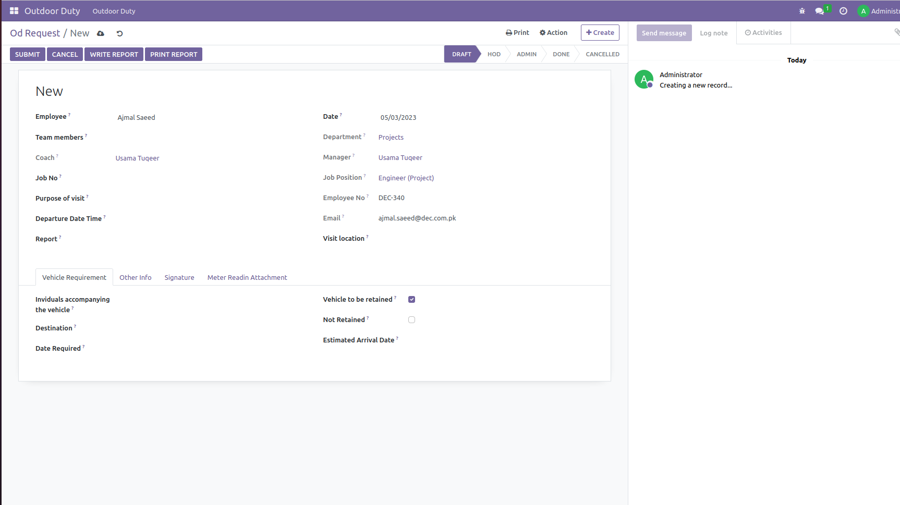
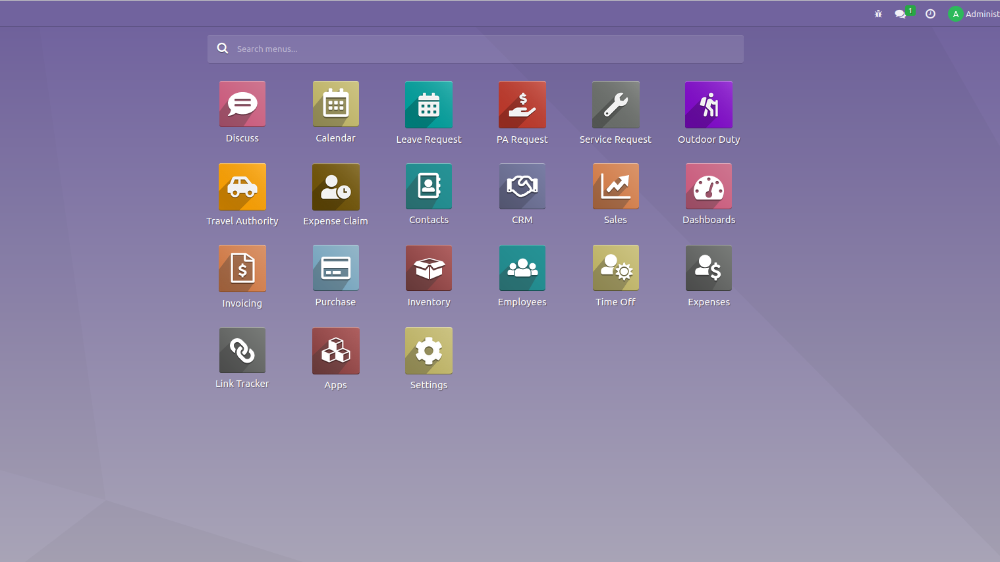
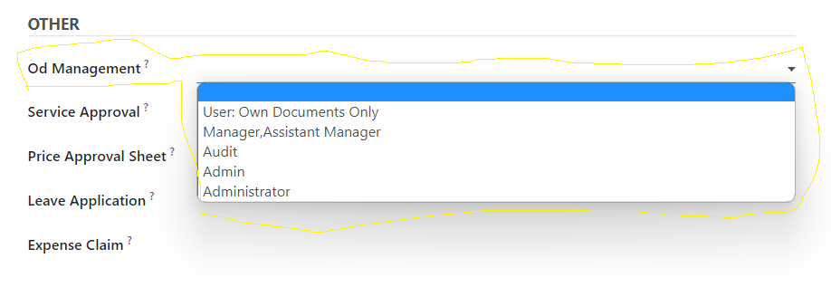
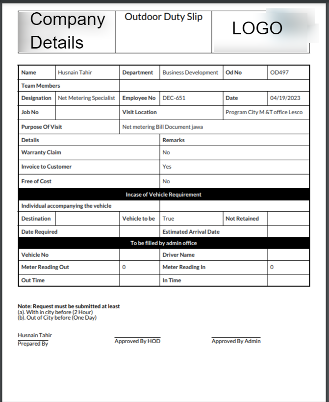
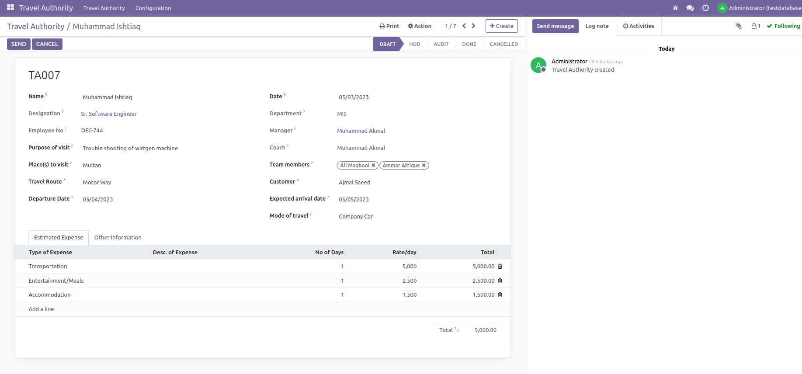

Create OD requests when employees need to perform duties outside of the company
Key features on user rights:
Users (Only own records view)
Manager (Only own Team or Only own department record view and apporved)
Gate Keeper Or Admin department (gate keeper can note time in/out on created OD when user leave the company )
Internal Audit (internal audit option is also available when employee will claim travelling killo meter Km)
When user click on create button for creating a OD request. Fetch all records automatically of current employee like Employee name, department, employee no, designation,
Head of department name, and job position.


OD and TA apps icon available in screen shot
Users Hierarchy

Stages (Status Bar)
Key features of module:
Auto Sequence Number Generation
Helping Paperless environment
Well customized PDF print view
Signature option on pdf print
Well customized custom header on pdf print
Best approval level
Writing report option on same OD
Report pdf option seprate available
Gate keeper can note in/out time
Vehicle meter reading option is also available
Driver name and vehicle No
Green ribbon on done stage
PDF Print View

Travel Authority (TA)
travel authority module help when the employee works outstation and then needs funds in case of traveling,
accommodation, food, and other miscellaneous. during approval, journal entries are automatically created
Users Rights
Users (Only own records view)
Manager (Only own Team or Only own department record view and apporved)
Internal Audit
Travel Authority Form View

Travel Authority Module Features:
Auto Sequence number Auto Generate
Visit Location
Purpose of visit
Traveling Mode
Traveling route
Approval rights
Custom PDF print view
Custom header design in pdf print
Segregation of Expense Types against funds
Auto General Entry Creation against funds
Payout option for accounting purpose